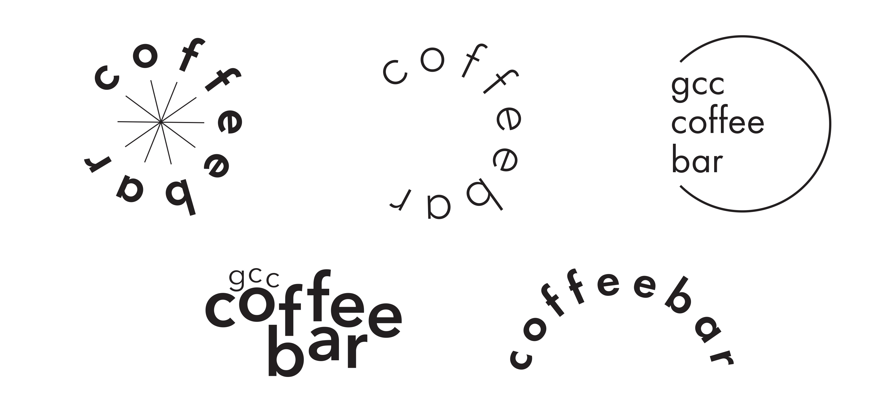
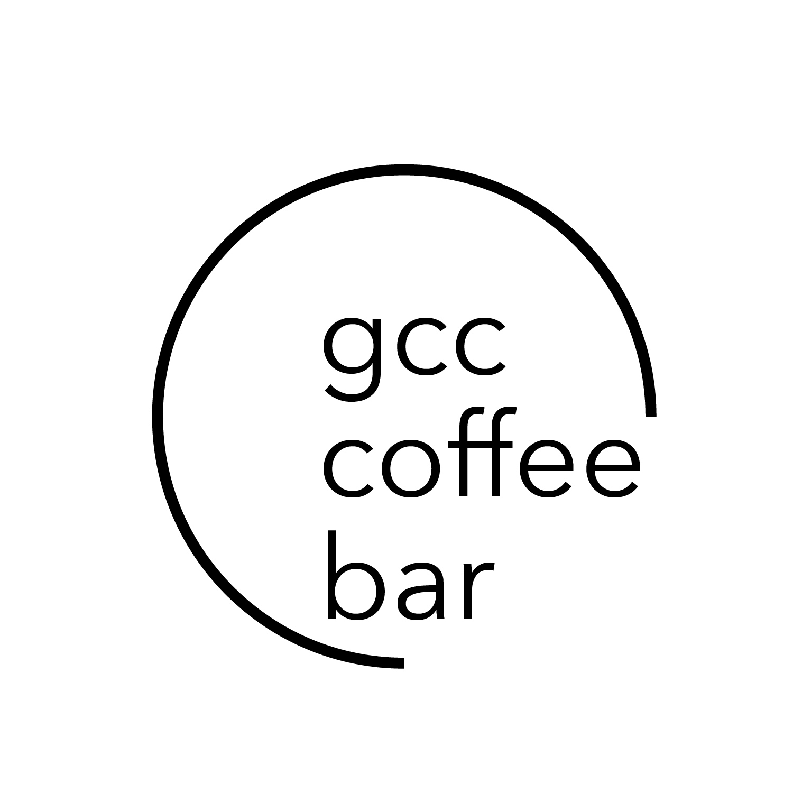

GCC Coffee Bar
Overview
The Grace Covenant Church Coffee Bar's mission is to use coffee as a means to bring people together in Christ. All proceeds go towards the church's missions teams that go out to China, Over The Rhine, Singapore, and Philadelphia. The Coffee Bar team brews pour-over coffee with self-roasted single-origin coffee beans from Ethiopia and Guatemala after service on Sundays. (I am also on this team!) I essentially got to design for two things I love – coffee and my church, Grace Covenant Church.
Tools
Adobe Illustrator
Typeface
I chose three options for the typeface — Futura PT, Avenir Next, and Europa. I felt that each one, though different, represented the idea of unity. Futura PT had a stricter tone to it that made it seem more strict. Avenir Next and Europa were smoother and more friendly.
Preliminary Designs
I first started with the mission of Coffee Bar. I wanted to emphasize unity and togetherness. In the preliminary designs, I focused on circular and round shapes, knowing that the circle is the ideal representation of unity. Coffee Bar invites people to take part in coming together in Christ. I opened up the circles, in essence, showing that coffee bar is an open space for all.

Final Logo

Coffee Cup Stamp
The main purpose of this logo was to create a stamp out of it so it can be used on coffee cups. Stop by Coffee Bar after service to get a Sunday afternoon pick me up!